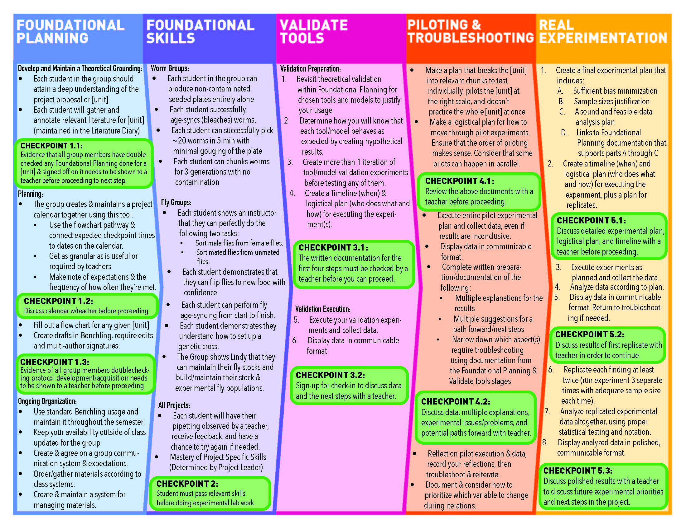

Teaching Assistant
Help
Examples
Gut-Brain Axis
Traumatic Brain Injury
How to use this tool?
Welcome to ChatGPT but for BRT. Before you go to a teacher check-in, describe and upload your work to this bot to get feedback.
